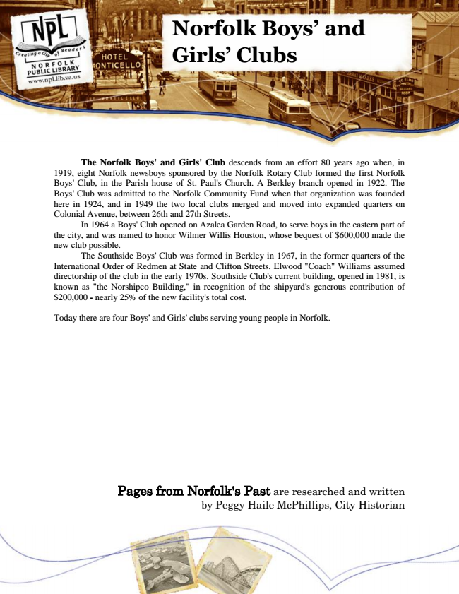

Norfolk Boys’ and Girls’ Clubs
The Norfolk Boys' and Girls' Club descends from an effort 80 years ago when, in 1919, eight Norfolk newsboys sponsored by the Norfolk Rotary Club formed the first Norfolk Boys' Club, in the Parish house of St. Paul's Church. A Berkley branch opened in 1922. The Boys' Club was admitted to the Norfolk Community Fund when that organization was founded here in 1924, and in 1949 the two local clubs merged and moved into expanded quarters on Colonial Avenue, between 26th and 27th Streets.
In 1964 a Boys' Club opened on Azalea Garden Road, to serve boys in the eastern part of the city, and was named to honor Wilmer Willis Houston, whose bequest of $600,000 made the new club possible.
The Southside Boys' Club was formed in Berkley in 1967, in the former quarters of the International Order of Redmen at State and Clifton Streets. Elwood "Coach" Williams assumed directorship of the club in the early 1970s. Southside Club's current building, opened in 1981, is known as "the Norshipco Building," in recognition of the shipyard's generous contribution of $200,000 - nearly 25% of the new facility's total cost.
Today there are four Boys' and Girls' clubs serving young people in Norfolk.
Pages from Norfolk's Past are researched and written by Peggy Haile McPhillips, City Historian